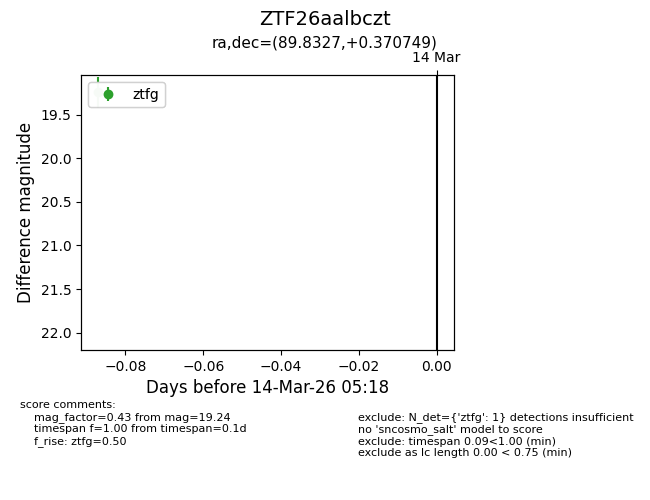
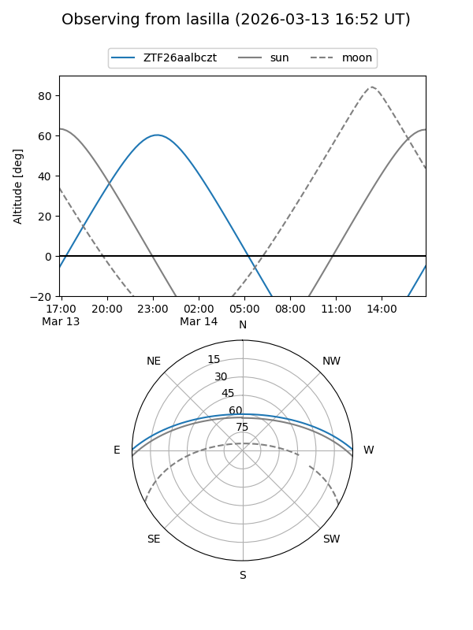
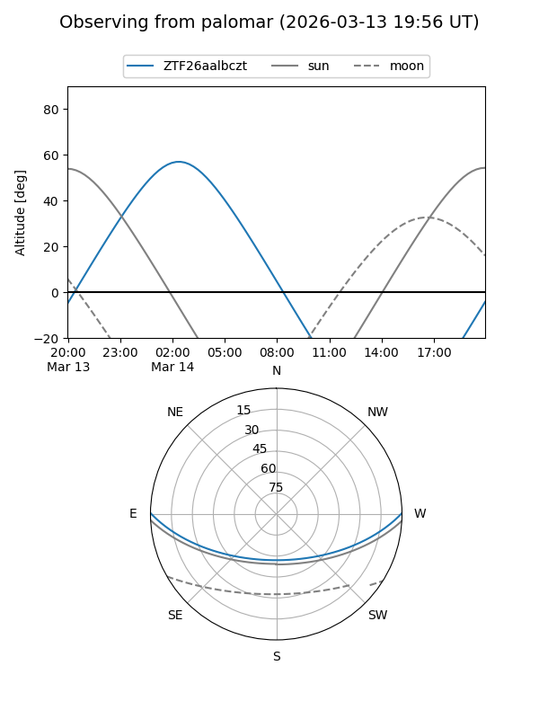

ZTF26aalbczt
Target ZTF26aalbczt at 2026-03-14 05:20
Aliases and brokers:
FINK: link
Lasair: link
ALeRCE: link
alt names
ZTF26aalbczt (ztf,fink_ztf)
Coordinates:
equatorial (ra, dec) = 89.8327,+0.37075
equatorial (HMS+DMS) = 05:59:19.84,+00:22:14.70
galactic (l, b) = (206.5749,-11.39985)
Flags:
Photometry:
last ztfg=19.24
1 ztfg detections
Lightcurve

Visibility


Additional plots